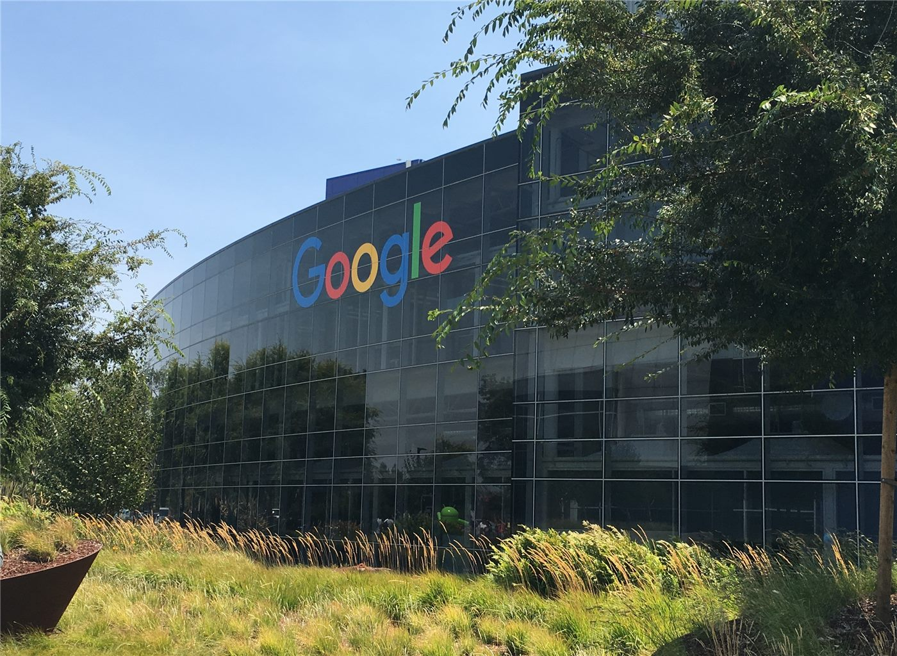

구글, ‘전력 효율 최대 10배’ 제미나이 전용칩 개발… AI 반도체 경쟁 가열
구글이 자사 AI 모델 ‘제미나이’ 전용 칩을 개발해 전력 효율을 최대 10배까지 높였다고 밝혔다. AI 반도체 분야에서 비용·전력 경쟁이 격화되고 있다.
진태흥 기자 · 2026.07.22
橋국제

구글이 ‘제미나이’ 전용 칩을 개발해 전력 효율을 최대 10배 끌어올렸다고 경향신문이 전했다. AI 연산의 비용과 전력 소모를 줄이려는 경쟁이 본격화됐다.
광고 문의 · 300×250AI 모델의 학습·추론에는 막대한 연산과 전력이 든다. 전용 칩은 특정 모델에 최적화해 같은 작업을 더 적은 전력으로 처리하도록 설계돼, 운영 비용과 탄소 배출을 함께 줄일 수 있다.
빅테크 기업들이 자체 칩 개발에 나서는 것은, 외부 반도체 의존을 줄이고 성능·비용을 스스로 통제하려는 전략으로 읽힌다. AI 인프라 경쟁이 소프트웨어를 넘어 하드웨어로 확장되는 흐름이다.
전력 효율은 AI 확산의 핵심 병목 가운데 하나다. 데이터센터 전력 수요가 급증하는 가운데, 효율 개선은 지속 가능성과 직결된 과제로 부상하고 있다.
華橋時報는 기술 경쟁의 이면에 있는 에너지·환경 문제도 함께 전한다. AI가 사회 전반으로 퍼질수록, 그 기반이 되는 전력과 자원의 지속 가능성이 중요한 물음으로 남는다.
출처·참고 (사실 확인용 — 본문은 직접 재작성)
· 경향신문
· 경향신문